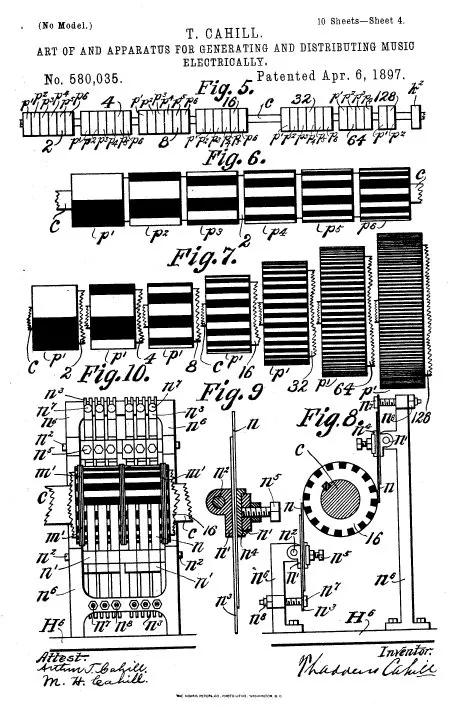
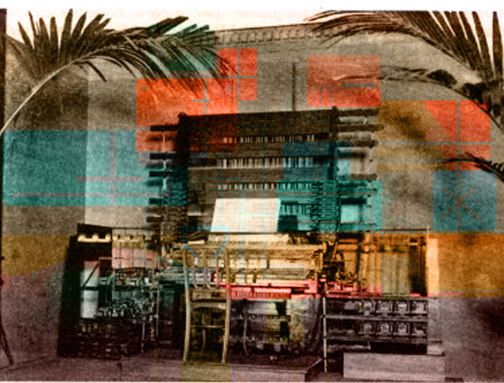

Reference Material
Primary sources



Historically grounded physical modeling instruments and web-based creative audio tools. Built from primary sources. Anomalies are features.
Stack: JUCE / C++ / CMake — Formats: VST3 / AU — Pricing: Buy-once

Period-accurate physical modeling of rare historical instruments, each built from primary sources — patents, scholarly texts, original schematics — rather than timbral approximation. Demo mode uses instrument-characteristic interruptions rather than generic license prompts.

A set of web-based creative tools sharing the .ngft file format for cross-tool compatibility.
WORLDMANGLE
Audio mangling driven by real-world data streams: DOW close, geomagnetic index, extinction rates, and a conspiracy belief proxy. Demucs vocal separation, librosa beat slicing. A DOW reading above 50,000 triggers an undocumented behavior change.
Driftbook
Visual narrative platform for sequencing images, text overlays, and performance into evolving nonlinear story experiences. Three modes: Studio (authoring), Performance (live projection), Drift (authored nonlinear evolution and recurrence). Built on Next.js, React, TypeScript, and Postgres.
Driftbook FX
Flipbook-metaphor effects plugin. Up to 20 image frames drive DSP at 30Hz via CoreImage analysis.
Driftorama
Live visual audio instrument where illustrated scenes function as the interface. Up to 10 scene elements control audio effects. Performances export as .wav files.